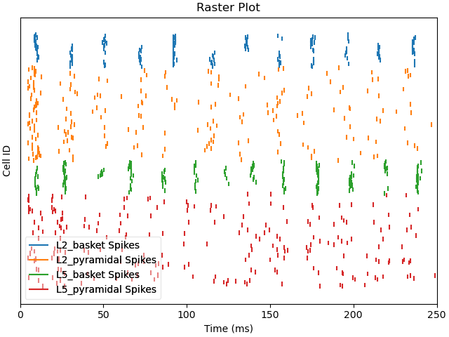
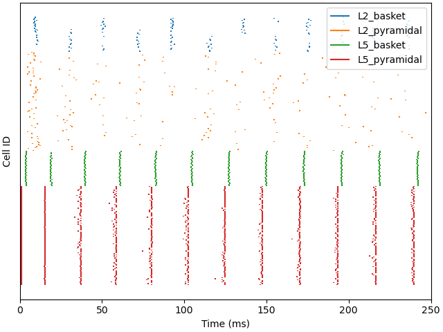

Note
Click here to download the full example code or to run this example in your browser via Binder
03. Simulate Gamma Rhythms¶
This example demonstrates how to simulate gamma rhythms via the well established pyramidal-interneuron-gamma mechanisms 1, as detailed in the HNN GUI gamma tutorial, using HNN-Core.
We recommend you first review the GUI tutorial. The workflow below recreates weak gamma rhythms similar to Figures 4 and 5 of the GUI tutorial, and strong gamma rhythms similar to Figure 12 and 13 in the GUI tutorial.
# Authors: Mainak Jas <mjas@mgh.harvard.edu>
# Sam Neymotin <samnemo@gmail.com>
# Christopher Bailey <bailey.cj@gmail.com>
# sphinx_gallery_thumbnail_number = 2
import os.path as op
Let us import hnn_core
import hnn_core
from hnn_core import simulate_dipole, read_params, jones_2009_model
hnn_core_root = op.dirname(hnn_core.__file__)
Read the parameter file and print the between-cell connectivity parameters. Note that these are different compared with the ‘default’ parameter set used in, e.g., sphx_glr_auto_examples_plot_simulate_alpha.py.
params_fname = op.join(hnn_core_root, 'param', 'gamma_L5weak_L2weak.json')
params = read_params(params_fname)
print(params['gbar_L*'])
Out:
{
"gbar_L2Basket_L2Basket": 0.01,
"gbar_L2Basket_L2Pyr_gabaa": 0.007,
"gbar_L2Basket_L2Pyr_gabab": 0.0,
"gbar_L2Basket_L5Pyr": 0.0,
"gbar_L2Pyr_L2Basket": 0.0012,
"gbar_L2Pyr_L2Pyr_ampa": 0.0,
"gbar_L2Pyr_L2Pyr_nmda": 0.0,
"gbar_L2Pyr_L5Basket": 0.0,
"gbar_L2Pyr_L5Pyr": 0.0,
"gbar_L5Basket_L5Basket": 0.0075,
"gbar_L5Basket_L5Pyr_gabaa": 0.08,
"gbar_L5Basket_L5Pyr_gabab": 0.0,
"gbar_L5Pyr_L5Basket": 0.00091,
"gbar_L5Pyr_L5Pyr_ampa": 0.0,
"gbar_L5Pyr_L5Pyr_nmda": 0.0
}
We’ll add a tonic Poisson-distributed excitation to pyramidal cells and
simulate the dipole moment in a single trial (the default value used by
simulate_dipole is n_trials=params['N_trials']).
net = jones_2009_model(params)
weights_ampa = {'L2_pyramidal': 0.0008, 'L5_pyramidal': 0.0075}
synaptic_delays = {'L2_pyramidal': 0.1, 'L5_pyramidal': 1.0}
rate_constant = {'L2_pyramidal': 140.0, 'L5_pyramidal': 40.0}
net.add_poisson_drive(
'poisson', rate_constant=rate_constant, weights_ampa=weights_ampa,
location='proximal', synaptic_delays=synaptic_delays, seedcore=1079)
dpls = simulate_dipole(net, tstop=250.)
scaling_factor = 30000
dpls = [dpl.scale(scaling_factor) for dpl in dpls] # scale in place
Out:
joblib will run over 1 jobs
Building the NEURON model
[Done]
running trial 1 on 1 cores
Simulation time: 0.03 ms...
Simulation time: 10.0 ms...
Simulation time: 20.0 ms...
Simulation time: 30.0 ms...
Simulation time: 40.0 ms...
Simulation time: 50.0 ms...
Simulation time: 60.0 ms...
Simulation time: 70.0 ms...
Simulation time: 80.0 ms...
Simulation time: 90.0 ms...
Simulation time: 100.0 ms...
Simulation time: 110.0 ms...
Simulation time: 120.0 ms...
Simulation time: 130.0 ms...
Simulation time: 140.0 ms...
Simulation time: 150.0 ms...
Simulation time: 160.0 ms...
Simulation time: 170.0 ms...
Simulation time: 180.0 ms...
Simulation time: 190.0 ms...
Simulation time: 200.0 ms...
Simulation time: 210.0 ms...
Simulation time: 220.0 ms...
Simulation time: 230.0 ms...
Simulation time: 240.0 ms...
Take a look at how different cell types respond to the exogenous drive. Note the periodic firing pattern of all cell types. While the basket cells fire relatively synchronously, the pyramidal cell populations display a more varied pattern, in which only a fraction of cells reach firing threshold.
Out:
<Figure size 640x480 with 1 Axes>
To confirm that the periodicity observed in the firing patterns correspond to a population oscillation in the gamma-range, we can plot the time-frequency representation together with the signal. Note that the network requires some time to reach steady state. Hence, we omit the first 50 ms in our analysis.
tmin = 50
trial_idx = 0 # pick first trial
# plot dipole time course and time-frequency representation in same figure
import numpy as np
import matplotlib.pyplot as plt
fig, axes = plt.subplots(2, 1, sharex=True, figsize=(6, 6),
constrained_layout=True)
dpls[trial_idx].plot(tmin=tmin, ax=axes[0], show=False)
# Create an fixed-step tiling of frequencies from 20 to 100 Hz in steps of 1 Hz
freqs = np.arange(20., 100., 1.)
dpls[trial_idx].plot_tfr_morlet(freqs, n_cycles=7, tmin=tmin, ax=axes[1])
Out:
<Figure size 600x600 with 3 Axes>
Now, let us try to re-run the simulation with a tonic bias applied to the L5 Pyramidal cells. Notice that the oscillation waveform is more regular, with less noise due to the fact that the tonic depolarization dominates over the influence of the Poisson drive. By default, a tonic bias is applied to the entire duration of the simulation.
net.add_tonic_bias(cell_type='L5_pyramidal', amplitude=6.)
dpls = simulate_dipole(net, tstop=250., n_trials=1)
dpls = [dpl.scale(scaling_factor) for dpl in dpls] # scale in place
dpls[trial_idx].plot()
Out:
joblib will run over 1 jobs
Building the NEURON model
[Done]
running trial 1 on 1 cores
Simulation time: 0.03 ms...
Simulation time: 10.0 ms...
Simulation time: 20.0 ms...
Simulation time: 30.0 ms...
Simulation time: 40.0 ms...
Simulation time: 50.0 ms...
Simulation time: 60.0 ms...
Simulation time: 70.0 ms...
Simulation time: 80.0 ms...
Simulation time: 90.0 ms...
Simulation time: 100.0 ms...
Simulation time: 110.0 ms...
Simulation time: 120.0 ms...
Simulation time: 130.0 ms...
Simulation time: 140.0 ms...
Simulation time: 150.0 ms...
Simulation time: 160.0 ms...
Simulation time: 170.0 ms...
Simulation time: 180.0 ms...
Simulation time: 190.0 ms...
Simulation time: 200.0 ms...
Simulation time: 210.0 ms...
Simulation time: 220.0 ms...
Simulation time: 230.0 ms...
Simulation time: 240.0 ms...
<Figure size 640x480 with 1 Axes>
Notice that the Layer 5 pyramidal neurons now fire nearly synchronously, leading to a synchronous activation of the inhibitory basket neurons, resulting in a low-latency IPSP back onto the pyramidal cells. The duration of the IPSP is ~20 ms, after which the combined effect of the tonic bias and Poisson drive is to bring the pyramidal cells back to firing threshold, creating a ~50 Hz PING rhythm. This type of synchronous rhythm is sometimes referred to as “strong” PING.
Out:
<Figure size 640x480 with 1 Axes>
Although the simulated dipole signal demonstrates clear periodicity, its frequency is lower compared with the “weak” PING simulation above.

Out:
<Figure size 640x480 with 1 Axes>
Finally, we demonstrate the mechanistic link between PING and the GABAA decay time constant (tau2). Using the same network/drive configuration as before, we decrease tau2 from 5 to 2 ms. This will shorten the effective refactory period between L5 pyramidal cell spikes and increase the PING frequency from ~50 to ~65 Hz.
net.cell_types['L5_pyramidal'].p_syn['gabaa']['tau2'] = 2
dpls = simulate_dipole(net, tstop=250., n_trials=1)
dpls = [dpl.scale(scaling_factor) for dpl in dpls] # scale in place
fig, axes = plt.subplots(3, 1, sharex=True, figsize=(6, 6),
constrained_layout=True)
dpls[trial_idx].plot(ax=axes[0], show=False)
net.cell_response.plot_spikes_raster(ax=axes[1], show=False)
dpls[trial_idx].plot_tfr_morlet(freqs, n_cycles=7, tmin=tmin, ax=axes[2])
Out:
joblib will run over 1 jobs
Building the NEURON model
[Done]
running trial 1 on 1 cores
Simulation time: 0.03 ms...
Simulation time: 10.0 ms...
Simulation time: 20.0 ms...
Simulation time: 30.0 ms...
Simulation time: 40.0 ms...
Simulation time: 50.0 ms...
Simulation time: 60.0 ms...
Simulation time: 70.0 ms...
Simulation time: 80.0 ms...
Simulation time: 90.0 ms...
Simulation time: 100.0 ms...
Simulation time: 110.0 ms...
Simulation time: 120.0 ms...
Simulation time: 130.0 ms...
Simulation time: 140.0 ms...
Simulation time: 150.0 ms...
Simulation time: 160.0 ms...
Simulation time: 170.0 ms...
Simulation time: 180.0 ms...
Simulation time: 190.0 ms...
Simulation time: 200.0 ms...
Simulation time: 210.0 ms...
Simulation time: 220.0 ms...
Simulation time: 230.0 ms...
Simulation time: 240.0 ms...
<Figure size 600x600 with 4 Axes>
References¶
- 1
Lee, S. & Jones, S. R. Distinguishing mechanisms of gamma frequency oscillations in human current source signals using a computational model of a laminar neocortical network. Frontiers in human neuroscience (2013)
Total running time of the script: ( 5 minutes 36.943 seconds)